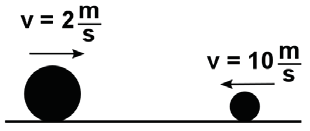
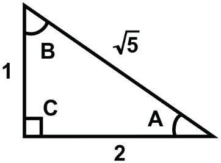

Simulación de Examen — Ingreso a la Licenciatura UNAM Área 3
La respuesta correcta aparece en verde
Pregunta 1 (ID 1)
Enunciado que ejemplifica la función referencial de la lengua.
A. ¡Qué lata con esta lluvia!
B. Seguirán las lluvias en el noreste del país. ✓
C. Hoy llueve mucho, y pareciera que están lavando el mundo.
D. Los maleantes fueron repelidos por otra lluvia de piedras.
Pregunta 2 (ID 2)
En el siguiente enunciado se ejemplifica la función _______ de la lengua.
Contra el silencio y el bullicio invento la palabra, libertad que se inventa y me inventa cada día.
A. referencial
B. emotiva
C. fática
D. poética ✓
Pregunta 3 (ID 3)
¿Qué forma del discurso predomina en el siguiente párrafo?
Las patas de los artrópodos están articuladas y su cuerpo está dividido en segmentos agrupados en tres regiones principales: cabeza, tórax y abdomen. En cambio los ácaros tienen cuatro pares de patas locomotoras. El primer par lo llevan levantado hacia adelante, a manera de antenas, para detectar los estímulos que les permiten orientarse.
A. Exposición
B. Descripción ✓
C. Narración
D. Argumentación
Pregunta 4 (ID 4)
¿Qué forma del discurso predomina en el siguiente párrafo?
Si bien la educación básica no alcanza una cobertura universal en los estratos de menores ingresos, debe ponerse énfasis en los aspectos de calidad y equidad, otorgando mayores oportunidades educativas a los niños, niñas y adolescentes de los estratos bajo y medio. Ello implica dar continuidad al proceso educativo, mejorar la eficiencia interna del sistema —reduciendo el ingreso tardío y la reprobación—, y llevar a cabo políticas tendientes a aumentar la educación secundaria.
A. Narrativa
B. Expositiva
C. Argumentativa ✓
D. Descriptiva
Pregunta 5 (ID 5)
Lee el siguiente texto y contesta de la pregunta 69 a la 73.
El ser humano ha generado 8.300 millones de toneladas de plástico
Estamos rodeados de plástico. Este inunda nuestra vida diaria en todo tipo de objetos —desde bolsas para hacer la compra hasta materiales de construcción e incluso ingredientes cosméticos, entre otros muchos productos—, y es que sus versátiles características y su bajo precio lo han convertido en un imprescindible para el ser humano. Sin embargo, no es oro todo lo que reluce, advierten los expertos, y el concepto de "bajo precio" se ha convertido en un coste muy alto a nivel medioambiental para el planeta.
De hecho, su producción se ha disparado de forma alarmante desde que se iniciaría la fabricación a gran escala de materiales sintéticos a principios de los años 50. Y hay datos de ello: según un estudio realizado por un equipo científico de la Universidad de California, la Universidad de Georgia y la Sea Education Association, todas ellas instituciones estadounidenses, los seres humanos hemos generado un total de 8.300 millones de toneladas de plástico. Y lo más preocupante es que no hemos sido demasiado diestros a la hora de gestionar los residuos: porque de esos 8.300 millones de toneladas fabricadas, 6.300 millones son hoy día residuos; y de estos, sólo alrededor del 9% se ha reciclado, el 12% se ha incinerado y la escalofriante cifra del 79% yace acumulada en vertederos o en el medio ambiente. Este es el primer análisis global de la producción, el uso y el destino final que se ha dado a todos los plásticos que el ser humano ha fabricado desde la creación de este material hasta el año 2015.
Para que te hagas una idea del plástico que hemos producido en todas esas décadas, su peso total sería equivalente, según destacan estos investigadores, a 822.000 Torres Eiffel, 25.000 Empire State, 80 millones de ballenas azules y 1.000 millones de elefantes.
Jenna Jambeck, co-autora de esta investigación y profesora asociada de la Universidad de Georgia, explica que "la mayoría de los plásticos no se biodegradan en ningún sentido, por lo que los residuos que los humanos han generado podrían estar con nosotros durante cientos e incluso miles de años. Nuestras estimaciones subrayan la necesidad de pensar en extremo en las prácticas de gestión de residuos".
Con el paso del tiempo, nos hemos ido haciendo más dependientes del plástico. De esta manera, si la producción mundial era de 2 millones de toneladas en 1950, en 2015, esta superó los 400 millones de toneladas, convirtiéndose en uno de los materiales más producidos por el ser humano. De hecho, del total de plástico producido entre 1950 y 2015, aproximadamente la mitad se ha generado en los últimos trece años.
Su mayor mercado está en el sector del empaquetado y la mayor parte de estos productos son de un solo uso y luego se desechan. Además, su vida útil es breve. Uno de los principales objetivos de este estudio es que se creen las bases necesarias para una gestión sostenible de materiales "que no se mide, por lo que pensamos que las discusiones sobre políticas a poner en marcha estarán más informadas y basadas en hechos ahora que tenemos estos números", añade Geyer.
Raquel de la Morena.
¿Cuál de las siguientes opciones corresponde a la idea principal del texto?
A. La vida útil del plástico es muy corta y su mayor mercado está en el sector del empaquetado.
B. A partir de los años 50 ha crecido la fabricación a gran escala de productos hechos a base de plástico.
C. El plástico producido en las últimas décadas se puede comparar con 80 millones de ballenas azules.
D. Es importante aprender a gestionar los residuos plásticos porque son una gran amenaza en el futuro. ✓
Pregunta 6 (ID 6)
Lee el siguiente texto y contesta de la pregunta 69 a la 73.
El ser humano ha generado 8.300 millones de toneladas de plástico
Estamos rodeados de plástico. Este inunda nuestra vida diaria en todo tipo de objetos —desde bolsas para hacer la compra hasta materiales de construcción e incluso ingredientes cosméticos, entre otros muchos productos—, y es que sus versátiles características y su bajo precio lo han convertido en un imprescindible para el ser humano. Sin embargo, no es oro todo lo que reluce, advierten los expertos, y el concepto de "bajo precio" se ha convertido en un coste muy alto a nivel medioambiental para el planeta.
De hecho, su producción se ha disparado de forma alarmante desde que se iniciaría la fabricación a gran escala de materiales sintéticos a principios de los años 50. Y hay datos de ello: según un estudio realizado por un equipo científico de la Universidad de California, la Universidad de Georgia y la Sea Education Association, todas ellas instituciones estadounidenses, los seres humanos hemos generado un total de 8.300 millones de toneladas de plástico. Y lo más preocupante es que no hemos sido demasiado diestros a la hora de gestionar los residuos: porque de esos 8.300 millones de toneladas fabricadas, 6.300 millones son hoy día residuos; y de estos, sólo alrededor del 9% se ha reciclado, el 12% se ha incinerado y la escalofriante cifra del 79% yace acumulada en vertederos o en el medio ambiente. Este es el primer análisis global de la producción, el uso y el destino final que se ha dado a todos los plásticos que el ser humano ha fabricado desde la creación de este material hasta el año 2015.
Para que te hagas una idea del plástico que hemos producido en todas esas décadas, su peso total sería equivalente, según destacan estos investigadores, a 822.000 Torres Eiffel, 25.000 Empire State, 80 millones de ballenas azules y 1.000 millones de elefantes.
Jenna Jambeck, co-autora de esta investigación y profesora asociada de la Universidad de Georgia, explica que "la mayoría de los plásticos no se biodegradan en ningún sentido, por lo que los residuos que los humanos han generado podrían estar con nosotros durante cientos e incluso miles de años. Nuestras estimaciones subrayan la necesidad de pensar en extremo en las prácticas de gestión de residuos".
Con el paso del tiempo, nos hemos ido haciendo más dependientes del plástico. De esta manera, si la producción mundial era de 2 millones de toneladas en 1950, en 2015, esta superó los 400 millones de toneladas, convirtiéndose en uno de los materiales más producidos por el ser humano. De hecho, del total de plástico producido entre 1950 y 2015, aproximadamente la mitad se ha generado en los últimos trece años.
Su mayor mercado está en el sector del empaquetado y la mayor parte de estos productos son de un solo uso y luego se desechan. Además, su vida útil es breve. Uno de los principales objetivos de este estudio es que se creen las bases necesarias para una gestión sostenible de materiales "que no se mide, por lo que pensamos que las discusiones sobre políticas a poner en marcha estarán más informadas y basadas en hechos ahora que tenemos estos números", añade Geyer.
Raquel de la Morena.
De acuerdo al texto, las prácticas de gestión de residuos se refieren a que
A. con el paso del tiempo nos hemos hecho más dependientes del plástico sin importar las consecuencias ocasionadas al ambiente.
B. se deben crear más grupos de investigación que examinen las características de los desechos orgánicos.
C. debemos conocer las características de la basura que generamos para clasificarla y reciclarla adecuadamente. ✓
D. los bajos precios del plástico generan una gran cantidad de desechos que tardan muchos años en biodegradarse.
Pregunta 7 (ID 7)
Lee el siguiente texto y contesta de la pregunta 69 a la 73.
El ser humano ha generado 8.300 millones de toneladas de plástico
Estamos rodeados de plástico. Este inunda nuestra vida diaria en todo tipo de objetos —desde bolsas para hacer la compra hasta materiales de construcción e incluso ingredientes cosméticos, entre otros muchos productos—, y es que sus versátiles características y su bajo precio lo han convertido en un imprescindible para el ser humano. Sin embargo, no es oro todo lo que reluce, advierten los expertos, y el concepto de "bajo precio" se ha convertido en un coste muy alto a nivel medioambiental para el planeta.
De hecho, su producción se ha disparado de forma alarmante desde que se iniciaría la fabricación a gran escala de materiales sintéticos a principios de los años 50. Y hay datos de ello: según un estudio realizado por un equipo científico de la Universidad de California, la Universidad de Georgia y la Sea Education Association, todas ellas instituciones estadounidenses, los seres humanos hemos generado un total de 8.300 millones de toneladas de plástico. Y lo más preocupante es que no hemos sido demasiado diestros a la hora de gestionar los residuos: porque de esos 8.300 millones de toneladas fabricadas, 6.300 millones son hoy día residuos; y de estos, sólo alrededor del 9% se ha reciclado, el 12% se ha incinerado y la escalofriante cifra del 79% yace acumulada en vertederos o en el medio ambiente. Este es el primer análisis global de la producción, el uso y el destino final que se ha dado a todos los plásticos que el ser humano ha fabricado desde la creación de este material hasta el año 2015.
Para que te hagas una idea del plástico que hemos producido en todas esas décadas, su peso total sería equivalente, según destacan estos investigadores, a 822.000 Torres Eiffel, 25.000 Empire State, 80 millones de ballenas azules y 1.000 millones de elefantes.
Jenna Jambeck, co-autora de esta investigación y profesora asociada de la Universidad de Georgia, explica que "la mayoría de los plásticos no se biodegradan en ningún sentido, por lo que los residuos que los humanos han generado podrían estar con nosotros durante cientos e incluso miles de años. Nuestras estimaciones subrayan la necesidad de pensar en extremo en las prácticas de gestión de residuos".
Con el paso del tiempo, nos hemos ido haciendo más dependientes del plástico. De esta manera, si la producción mundial era de 2 millones de toneladas en 1950, en 2015, esta superó los 400 millones de toneladas, convirtiéndose en uno de los materiales más producidos por el ser humano. De hecho, del total de plástico producido entre 1950 y 2015, aproximadamente la mitad se ha generado en los últimos trece años.
Su mayor mercado está en el sector del empaquetado y la mayor parte de estos productos son de un solo uso y luego se desechan. Además, su vida útil es breve. Uno de los principales objetivos de este estudio es que se creen las bases necesarias para una gestión sostenible de materiales "que no se mide, por lo que pensamos que las discusiones sobre políticas a poner en marcha estarán más informadas y basadas en hechos ahora que tenemos estos números", añade Geyer.
Raquel de la Morena.
Luego de leer el párrafo 6 se deduce que
A. las investigaciones sobre los daños que causa el plástico en el medio ambiente están encabezadas por especialistas estadounidenses.
B. se deben tomar acciones para disminuir la producción cosmética, comercial e industrial del plástico a nivel mundial, a pesar de su bajo costo.
C. el plástico ha aumentado considerablemente su producción en el ámbito empresarial a partir de los años 50 derivado de una sociedad más consumista. ✓
D. el ser humano no tiene conocimiento de cómo debe reciclar el plástico porque no conoce sus características; por lo tanto, aumenta la contaminación ambiental.
Pregunta 8 (ID 8)
Lee el siguiente texto y contesta de la pregunta 69 a la 73.
El ser humano ha generado 8.300 millones de toneladas de plástico
Estamos rodeados de plástico. Este inunda nuestra vida diaria en todo tipo de objetos —desde bolsas para hacer la compra hasta materiales de construcción e incluso ingredientes cosméticos, entre otros muchos productos—, y es que sus versátiles características y su bajo precio lo han convertido en un imprescindible para el ser humano. Sin embargo, no es oro todo lo que reluce, advierten los expertos, y el concepto de "bajo precio" se ha convertido en un coste muy alto a nivel medioambiental para el planeta.
De hecho, su producción se ha disparado de forma alarmante desde que se iniciaría la fabricación a gran escala de materiales sintéticos a principios de los años 50. Y hay datos de ello: según un estudio realizado por un equipo científico de la Universidad de California, la Universidad de Georgia y la Sea Education Association, todas ellas instituciones estadounidenses, los seres humanos hemos generado un total de 8.300 millones de toneladas de plástico. Y lo más preocupante es que no hemos sido demasiado diestros a la hora de gestionar los residuos: porque de esos 8.300 millones de toneladas fabricadas, 6.300 millones son hoy día residuos; y de estos, sólo alrededor del 9% se ha reciclado, el 12% se ha incinerado y la escalofriante cifra del 79% yace acumulada en vertederos o en el medio ambiente. Este es el primer análisis global de la producción, el uso y el destino final que se ha dado a todos los plásticos que el ser humano ha fabricado desde la creación de este material hasta el año 2015.
Para que te hagas una idea del plástico que hemos producido en todas esas décadas, su peso total sería equivalente, según destacan estos investigadores, a 822.000 Torres Eiffel, 25.000 Empire State, 80 millones de ballenas azules y 1.000 millones de elefantes.
Jenna Jambeck, co-autora de esta investigación y profesora asociada de la Universidad de Georgia, explica que "la mayoría de los plásticos no se biodegradan en ningún sentido, por lo que los residuos que los humanos han generado podrían estar con nosotros durante cientos e incluso miles de años. Nuestras estimaciones subrayan la necesidad de pensar en extremo en las prácticas de gestión de residuos".
Con el paso del tiempo, nos hemos ido haciendo más dependientes del plástico. De esta manera, si la producción mundial era de 2 millones de toneladas en 1950, en 2015, esta superó los 400 millones de toneladas, convirtiéndose en uno de los materiales más producidos por el ser humano. De hecho, del total de plástico producido entre 1950 y 2015, aproximadamente la mitad se ha generado en los últimos trece años.
Su mayor mercado está en el sector del empaquetado y la mayor parte de estos productos son de un solo uso y luego se desechan. Además, su vida útil es breve. Uno de los principales objetivos de este estudio es que se creen las bases necesarias para una gestión sostenible de materiales "que no se mide, por lo que pensamos que las discusiones sobre políticas a poner en marcha estarán más informadas y basadas en hechos ahora que tenemos estos números", añade Geyer.
Raquel de la Morena.
La preocupación de la investigadora de la Universidad de Georgia consiste en que
A. las estadísticas de la acumulación de plásticos van en aumento, pero se trabaja para disminuir la contaminación.
B. hay muchos productos elaborados a base de plástico como cosméticos y materiales para la construcción.
C. el plástico no se biodegrada de ninguna manera y permanece a nuestro alrededor en forma de contaminante. ✓
D. los seres humanos no hacemos conciencia sobre los graves riesgos que implica la acumulación del plástico.
Pregunta 9 (ID 9)
Lee el siguiente texto y contesta de la pregunta 69 a la 73.
El ser humano ha generado 8.300 millones de toneladas de plástico
Estamos rodeados de plástico. Este inunda nuestra vida diaria en todo tipo de objetos —desde bolsas para hacer la compra hasta materiales de construcción e incluso ingredientes cosméticos, entre otros muchos productos—, y es que sus versátiles características y su bajo precio lo han convertido en un imprescindible para el ser humano. Sin embargo, no es oro todo lo que reluce, advierten los expertos, y el concepto de "bajo precio" se ha convertido en un coste muy alto a nivel medioambiental para el planeta.
De hecho, su producción se ha disparado de forma alarmante desde que se iniciaría la fabricación a gran escala de materiales sintéticos a principios de los años 50. Y hay datos de ello: según un estudio realizado por un equipo científico de la Universidad de California, la Universidad de Georgia y la Sea Education Association, todas ellas instituciones estadounidenses, los seres humanos hemos generado un total de 8.300 millones de toneladas de plástico. Y lo más preocupante es que no hemos sido demasiado diestros a la hora de gestionar los residuos: porque de esos 8.300 millones de toneladas fabricadas, 6.300 millones son hoy día residuos; y de estos, sólo alrededor del 9% se ha reciclado, el 12% se ha incinerado y la escalofriante cifra del 79% yace acumulada en vertederos o en el medio ambiente. Este es el primer análisis global de la producción, el uso y el destino final que se ha dado a todos los plásticos que el ser humano ha fabricado desde la creación de este material hasta el año 2015.
Para que te hagas una idea del plástico que hemos producido en todas esas décadas, su peso total sería equivalente, según destacan estos investigadores, a 822.000 Torres Eiffel, 25.000 Empire State, 80 millones de ballenas azules y 1.000 millones de elefantes.
Jenna Jambeck, co-autora de esta investigación y profesora asociada de la Universidad de Georgia, explica que "la mayoría de los plásticos no se biodegradan en ningún sentido, por lo que los residuos que los humanos han generado podrían estar con nosotros durante cientos e incluso miles de años. Nuestras estimaciones subrayan la necesidad de pensar en extremo en las prácticas de gestión de residuos".
Con el paso del tiempo, nos hemos ido haciendo más dependientes del plástico. De esta manera, si la producción mundial era de 2 millones de toneladas en 1950, en 2015, esta superó los 400 millones de toneladas, convirtiéndose en uno de los materiales más producidos por el ser humano. De hecho, del total de plástico producido entre 1950 y 2015, aproximadamente la mitad se ha generado en los últimos trece años.
Su mayor mercado está en el sector del empaquetado y la mayor parte de estos productos son de un solo uso y luego se desechan. Además, su vida útil es breve. Uno de los principales objetivos de este estudio es que se creen las bases necesarias para una gestión sostenible de materiales "que no se mide, por lo que pensamos que las discusiones sobre políticas a poner en marcha estarán más informadas y basadas en hechos ahora que tenemos estos números", añade Geyer.
Raquel de la Morena.
La intención de la autora al escribir este texto es
A. comparar los diferentes tipos de contaminantes ambientales y sus consecuencias en el planeta.
B. conocer las estadísticas de los residuos plásticos para ver cuánto han crecido en los últimos años.
C. concientizar sobre el uso desmedido del plástico y difundir la gestión de los desechos en el entorno. ✓
D. los bajos precios del plástico generan una gran cantidad de desechos que tardan muchos años en biodegradarse.
Pregunta 10 (ID 10)
Selecciona la opción que presenta un sujeto tácito o implícito.
A. Somos nada frente a la muerte infausta. ✓
B. Feliz aquél que busca a Dios en sí mismo.
C. ¡Señor!, tiembla mi alma ante tu grandeza.
D. Yo he subido más alto, mucho más alto.
Pregunta 11 (ID 11)
En el siguiente enunciado, las palabras subrayadas funcionan como complemento
La señora Ramírez vio vagar sobre los labios de los jefes **una sonrisa**.
A. adnominal.
B. directo. ✓
C. indirecto.
D. circunstancial.
Pregunta 12 (ID 12)
Elige el párrafo con la redacción apropiada.
A. Cuentan que en éste año hubieron muchos damnificados a consecuencia de las inundaciones.
B. Afirmaron que éste año habían muchos damnificados a consecuencia de las inundaciones.
C. Se afirmó que en este año hubieron muchos damnificados a consecuencia de las inundaciones.
D. Según los últimos datos, en este año ha habido muchos damnificados a consecuencia de las inundaciones. ✓
Pregunta 13 (ID 13)
¿Cuál de los siguientes párrafos está redactado correctamente?
A. En la reunión se abordarán tres asuntos: el diseño de un manual de operaciones; el seguimiento a los pedidos de los nuevos clientes; buscar proveedores más cumplidos; y también se harán propuestas para abrir nuevas sucursales.
B. En la reunión se abordarán tres asuntos: el diseño de un manual de operaciones; el seguimiento a los pedidos de los nuevos clientes; y la búsqueda de proveedores más cumplidos. También se harán propuestas para abrir nuevas sucursales. ✓
C. En la reunión se abordarán tres asuntos: diseñar un manual de operaciones; el seguimiento a los pedidos de los nuevos clientes; y buscar proveedores más cumplidos. También se harán propuestas para abrir nuevas sucursales.
D. En la reunión se abordarán tres asuntos: cómo diseñar un manual de operaciones; el seguimiento a los pedidos de los nuevos clientes; y la búsqueda de proveedores más cumplidos. Finalmente, se harán propuestas para abrir nuevas sucursales.
Pregunta 14 (ID 14)
Elige la opción que completa adecuadamente el siguiente párrafo.
Quisieron colaborar con una obra magistral, _______ no guardaban los requisitos necesarios; _______, tuvieron que resignarse _______ la realización de una presentación más sencilla.
A. sin embargo — no obstante — a
B. mas — por tanto — a
C. más — en conclusión — con
D. pero — en consecuencia — con ✓
Pregunta 15 (ID 15)
Elige la opción que completa correctamente la siguiente analogía.
El tiburón es un piscívoro y el león es un
A. carnívoro. ✓
B. cuadrúpedo.
C. mamífero.
D. depredador.
Pregunta 16 (ID 16)
Selecciona el sinónimo de la palabra en mayúsculas.
Tuvo un leve ESTREMECIMIENTO de frío.
A. Ataque.
B. Espanto.
C. Sacudimiento.
D. Temblor. ✓
Pregunta 17 (ID 17)
Elige la opción con la ortografía correcta.
A. El rebaño avanza sin cesar y ellos comienzan a rezagarse. ✓
B. El rebaño avanza sin cezar y ellos comiensan a resagarce.
C. El rebaño avansa sin cezar y ellos comienzan a rezagarce.
D. El rebaño avanza sin cesar y ellos comiensan a resagarse.
Pregunta 18 (ID 18)
Elige el enunciado que tiene la puntuación correcta.
A. "¿Oyes? allá afuera está lloviendo. ¿No sientes el golpear de la lluvia?" J. Rulfo.
B. ¡Oyes! allá afuera está lloviendo. ¿No sientes el golpear de la lluvia? [J. Rulfo].
C. ¿Oyes? Allá afuera está lloviendo. ¿No sientes el golpear de la lluvia? (J. Rulfo).
D. "¿Oyes? allá afuera está lloviendo. ¿No sientes el golpear de la lluvia?" (J. Rulfo). ✓
Pregunta 19 (ID 19)
¿Cuál de los siguientes es un ejemplo de movimiento rectilíneo uniforme?
A. Una pelota lanzada hacia arriba
B. Un péndulo oscilando
C. Un tren que avanza en línea recta a velocidad constante ✓
D. Un automóvil que frena hasta detenerse
Pregunta 20 (ID 20)
Tres caballos jalan una carreta de 500 kg en la misma dirección. Cada uno ejerce una fuerza de 1 500 N. Si no hay fricción, la fuerza total con la que se jala la carreta es:
A. 500 N
B. 1 500 N
C. 3 000 N
D. 4 500 N ✓
Pregunta 21 (ID 21)
La potencia que requiere un montacargas para elevar con rapidez constante un bloque de 2 000 N a una altura de 3 m en 15 s es:
A. 90 000 W
B. 10 000 W
C. 6 000 W
D. 400 W ✓
Pregunta 22 (ID 22)
Una pelota de 2 kg se desplaza hacia la izquierda a 10 m/s y choca frontalmente con una pelota de 4 kg que viaja hacia la derecha a 2 m/s. Si las pelotas quedan pegadas después del choque, la velocidad final es:

A. $$-\frac{8}{3}$$ m/s ✓
B. $$5$$ m/s
C. $$12$$ m/s
D. $$-2$$ m/s
Pregunta 23 (ID 23)
Un termómetro marca 102 °F. ¿Cuál es la temperatura en °C?
Usa la fórmula: $$°C = \frac{5}{9}(°F - 32)$$
A. 312 °C
B. 74.4 °C
C. 38.9 °C ✓
D. 347 °C
Pregunta 24 (ID 24)
Una onda formada en una cuerda tiene longitud de onda de 10 cm y periodo de 2 s. ¿Con qué velocidad se propaga?
A. 20 cm/s
B. 0.25 cm/s
C. 5 cm/s ✓
D. 2 cm/s
Pregunta 25 (ID 25)
¿En cuál de las siguientes condiciones se genera un campo magnético?
A. Por la simple presencia de cargas eléctricas estáticas
B. Al tener campos eléctricos en movimiento
C. Al tener cargas eléctricas en movimiento ✓
D. Por la simple presencia de campos eléctricos estáticos
Pregunta 26 (ID 26)
¿En cuánto tiempo se llenará una alberca olímpica de 50 m × 25 m × 3 m si se usa un tubo de 40 cm de diámetro por el que fluye agua a una velocidad de 4 m/s?
A. 0.0052 horas
B. 0.020 horas
C. 1.63 horas
D. 2.07 horas ✓
Pregunta 27 (ID 27)
El ángulo de incidencia en un espejo es de 30° sobre la normal. ¿Cuál es el ángulo reflejado respecto a la horizontal?
A. 0°
B. 15°
C. 30°
D. 60° ✓
Pregunta 28 (ID 28)
El modelo atómico que explica la estabilidad del electrón en órbita alrededor del núcleo en el átomo de hidrógeno fue propuesto por:
A. Arnold Sommerfeld
B. Niels Bohr ✓
C. Ernest Rutherford
D. Joseph Thomson
Pregunta 29 (ID 29)
El valor de $$\sqrt[3]{25^3}$$ es:
A. 25 ✓
B. 125
C. 225
D. 625
Pregunta 30 (ID 30)
Dos números están en razón $$\frac{3}{7}$$. Si el menor de ellos es 189, ¿cuál es el otro?
A. 525
B. 519
C. 441 ✓
D. 386
Pregunta 31 (ID 31)
Al simplificar $$\frac{x^2 - 5x + 6}{2ax - 6a}$$ se obtiene:
A. $$\frac{(x-2)(x-3)}{2a}$$
B. $$\frac{x-3}{2a}$$
C. $$\frac{x-2}{2a}$$ ✓
D. $$\frac{(x-2)(x+3)}{2a}$$
Pregunta 32 (ID 32)
El producto $$\left(\frac{x^2 - 3x}{x - 1}\right)\left(\frac{x - 1}{x - 3}\right)$$ es igual a:
A. $$x(x - 3)$$
B. $$x - 3$$
C. $$x$$ ✓
D. $$x - 1$$
Pregunta 33 (ID 33)
La solución de la ecuación $$5 + \frac{x}{x+2} = 1$$ es:
A. $$-\frac{8}{5}$$ ✓
B. $$\frac{5}{8}$$
C. $$-\frac{5}{8}$$
D. $$\frac{8}{5}$$
Pregunta 34 (ID 34)
Si el perímetro de un rectángulo es de 16 dm y su área es de 14 dm², ¿cuánto mide el largo y el ancho del rectángulo?
A. 4 dm y 4 dm
B. $$(4 + \sqrt{2})$$ dm y $$(4 - \sqrt{2})$$ dm ✓
C. $$(5 + \sqrt{2})$$ dm y $$(5 - \sqrt{2})$$ dm
D. 8 dm y 1 dm
Pregunta 35 (ID 35)
Al resolver la desigualdad $$5 + x > 8$$, ¿qué se obtiene como solución?
A. $$x > 3$$ ✓
B. $$x > -13$$
C. $$x > -3$$
D. $$x > 13$$
Pregunta 36 (ID 36)
Cinco cuadernos y ocho lapiceros cuestan $115; tres cuadernos y cinco lapiceros cuestan $70. ¿Cuál es el precio de cada cuaderno?
A. $15 ✓
B. $10
C. $13
D. $12
Pregunta 37 (ID 37)
¿Cuál es la solución del siguiente sistema de ecuaciones?
$$3x + y = 8$$
$$2x - 4y = -4$$
A. $$x = -2;\; y = 2$$
B. $$x = -2;\; y = -2$$
C. $$x = 2;\; y = -2$$
D. $$x = 2;\; y = 2$$ ✓
Pregunta 38 (ID 38)
¿Cuál es el dominio de la siguiente función polinomial?
$$f(x) = x^3 + 2x^2 - 3x + 1$$
A. $$[-\infty, \infty]$$
B. $$(-\infty, 1)$$
C. $$(-\infty, \infty)$$ ✓
D. $$(-1, \infty)$$
Pregunta 39 (ID 39)
¿Cuál de las siguientes gráficas NO representa una función para $$x$$?
Pregunta 40 (ID 40)
Si $$f(x) = \frac{1}{x^2 - 1}$$ y $$g(x) = x + 2$$, entonces $$(f \circ g)(x)$$ es igual a:
A. $$\frac{1}{x^2 + 2}$$
B. $$\frac{1}{x^2 + 4x + 5}$$
C. $$\frac{1}{x^2 + 5}$$
D. $$\frac{1}{x^2 + 4x + 3}$$ ✓
Pregunta 41 (ID 41)
En un triángulo rectángulo con catetos de 1 y 2 e hipotenusa $$\sqrt{5}$$, si $$B$$ es el ángulo opuesto al cateto de medida 2, entonces $$\sin(B)$$ es:

A. $$\frac{2}{\sqrt{5}}$$ ✓
B. $$\frac{1}{\sqrt{5}}$$
C. $$\frac{1}{\sqrt{3}}$$
D. $$\frac{2}{\sqrt{3}}$$
Pregunta 42 (ID 42)
Un poste proyecta una sombra de 1.5 m en el momento en que el ángulo de elevación del sol es de 60°. ¿Cuál es la altura del poste?
Considera: $$\tan 60° = 1.732$$
A. 2.59 m ✓
B. 1.73 m
C. 3.00 m
D. 1.29 m
Pregunta 43 (ID 43)
¿Cuál es la ecuación de la asíntota vertical de la función $$f(x) = 2\log(x - 3)$$?
A. $$x = 3$$ ✓
B. $$y = -3$$
C. $$x = -3$$
D. $$y = 3$$
Pregunta 44 (ID 44)
La distancia entre los puntos $$P(-1, 1)$$ y $$Q(1, -1)$$ en el plano cartesiano es:
A. $$\sqrt{8}$$ ✓
B. $$2$$
C. $$\sqrt{2}$$
D. $$4$$
Pregunta 45 (ID 45)
La pendiente de la recta que pasa por los puntos $$H(-8, 5)$$ y $$K(6, -1)$$ es igual a:
A. $$-2$$
B. $$3$$
C. $$-\frac{3}{7}$$ ✓
D. $$\frac{7}{3}$$
Pregunta 46 (ID 46)
¿Cuál es la ecuación de la recta que pasa por el punto $$P(5, 2)$$ y es paralela a la recta que pasa por los puntos $$Q(2, -6)$$ y $$R(-1, 3)$$?
A. $$y = -2x - 9$$
B. $$y = -4x + 3$$
C. $$y = -5x - 11$$
D. $$y = -3x + 17$$ ✓
Pregunta 47 (ID 47)
¿Cuál de las siguientes ecuaciones corresponde a una circunferencia con centro en el origen y radio 2?
A. $$x^2 + y^2 - 4 = 0$$ ✓
B. $$x^2 - y^2 - 2 = 0$$
C. $$x^2 + y^2 + 2 = 0$$
D. $$x^2 - y^2 - 4 = 0$$
Pregunta 48 (ID 48)
¿Cuál es el centro y el radio de la siguiente circunferencia?
$$(x + 3)^2 + (y - 2)^2 = 36$$
A. $$C(3, 2);\; r = 6$$
B. $$C(3, 2);\; r = 36$$
C. $$C(-3, 2);\; r = 6$$ ✓
D. $$C(-3, 2);\; r = 36$$
Pregunta 49 (ID 49)
Calcula el vértice de la siguiente parábola:
$$(y - 3)^2 = 12x - 24$$
A. $$V = (2, 3)$$ ✓
B. $$V = (3, 2)$$
C. $$V = (-3, -2)$$
D. $$V = (-2, -3)$$
Pregunta 50 (ID 50)
Determina las coordenadas de los focos de una elipse cuya ecuación es $$9x^2 + y^2 = 9$$.
A. $$F_1 = (-\sqrt{8}, 0);\; F_2 = (\sqrt{8}, 0)$$
B. $$F_1 = (-\sqrt{10}, 0);\; F_2 = (\sqrt{10}, 0)$$
C. $$F_1 = (0, -\sqrt{8});\; F_2 = (0, \sqrt{8})$$ ✓
D. $$F_1 = (0, -\sqrt{10});\; F_2 = (0, \sqrt{10})$$
Pregunta 51 (ID 51)
¿Cuál es el lugar geométrico en el plano cartesiano en el que el valor absoluto de la diferencia de sus distancias a dos puntos fijos en el mismo plano resulta siempre igual a una constante, positiva y menor que la distancia entre dichos puntos fijos?
A. Circunferencia
B. Parábola
C. Elipse
D. Hipérbola ✓
Pregunta 52 (ID 52)
¿Cuál de las siguientes representa la ecuación general de segundo grado con dos variables?
A. $$Ax^2 + By^2 + Cz^2 + Dxyz + 2Exy + F = 0$$
B. $$Ax^2 + By^2 + C = 0$$
C. $$Ax^2 + Bx + C = 0$$
D. $$Ax^2 + Bxy + Cy^2 + Dx + Ey + F = 0$$ ✓
Pregunta 53 (ID 53)
De acuerdo con su organización textual, las propiedades del texto deben presentar:
A. Una situación comunicativa en la que surja una unidad de información con significado coherente, cuyas ideas tienen cohesión ✓
B. Un cuerpo de citas y referentes claramente documentados, con apoyo en lo anterior para dar verosimilitud
C. Una serie de ideas perfectamente establecidas cuya finalidad es informar a partir de su función referencial y apelativa
D. Un contenido acorde al pensamiento del autor, en la que las ideas se presentan en función de la subjetividad del lector
Pregunta 54 (ID 54)
La última parte de la obra dramática en la que los personajes resuelven sus conflictos, alcanzan su felicidad o bien son derrotados, se denomina:
A. Colofón
B. Desenlace ✓
C. Nudo
D. Clímax
Pregunta 55 (ID 55)
En el texto dramático, el subgénero en el que el personaje principal se deja llevar por las bajas pasiones y ninguna de sus acciones ayudará, por bien intencionadas que sean, a solucionar sus problemas, se denomina:
A. Tragedia ✓
B. Drama
C. Tragicomedia
D. Entremés
Pregunta 56 (ID 56)
Identifica el metro del siguiente verso:
'Yo sé los nombres extraños.' — José Martí
A. Endecasílabo
B. Octosílabo ✓
C. Decasílabo
D. Heptasílabo
Pregunta 57 (ID 57)
El género literario que aborda asuntos heroicos, sus personajes se inspiran en figuras históricas y simbolizan valores universales de la colectividad, es el:
A. Lírico
B. Épico ✓
C. Dramático
D. Narrativo
Pregunta 58 (ID 58)
Los autores que conforman una corriente literaria:
A. Comparten características en cuanto a su forma de escribir y el interés por desarrollar temas similares; además, viven en una misma época ✓
B. Heredan el estilo de quienes los precedieron, comparten una forma de escribir y abordan un género determinado, como la dramaturgia o la novela
C. Heredan el estilo de quienes los precedieron, comparten una forma de escribir y muestran interés por desarrollar temas similares
D. Abordan un género determinado, como la dramaturgia o la novela, comparten el interés por desarrollar temas similares y viven en una misma época
Pregunta 59 (ID 59)
Movimiento literario que surge en la segunda mitad del siglo XIX como reacción ante el individualismo extremo y el idealismo que caracterizó al romanticismo:
A. Neoclasicismo
B. Creacionismo
C. Realismo ✓
D. Surrealismo
Pregunta 60 (ID 60)
Los relatos cortos 'Diles que no me maten' y 'No oyes ladrar los perros' fueron escritos por:
A. Juan Rulfo ✓
B. Carlos Fuentes
C. Octavio Paz
D. José Agustín
Pregunta 61 (ID 61)
¿A qué género literario pertenece la novela?
A. Poético
B. Dramático
C. Narrativo ✓
D. Épico
Pregunta 62 (ID 62)
Identifica la ficha hemerográfica:
A. Dosal Gómez, María Rosario, et al. Lengua española. Español IV. México: Patria Cultural, 2001.
B. García Márquez, Gabriel. 'Cómo eran mis compañeros muertos en el mar' en Relato de un náufrago. 7–10. Ciudad de México: De Bolsillo, 2003.
C. Peguero, Rosario. 'La filosofía de lucro, el gran mito de la edad contemporánea: Roa Bastos'. El país. Ciudad de México, 31 septiembre 2005, p. 31. ✓
D. Ocampo de Gómez, Aurora Maura, y Ernesto Prado Velázquez. Diccionario de escritores mexicanos. México: UNAM, Centro de Estudios Literarios, 1967.
Pregunta 63 (ID 63)
Es un ejemplo de la relación sociedad–naturaleza como objeto de estudio de la Geografía:
A. Los husos horarios son divisiones de la Tierra hechas en el siglo XIX
B. El clima se define por el promedio de las condiciones medias de la atmósfera
C. La corriente de Humboldt tiene relación con la gran riqueza pesquera de Perú ✓
D. Las migraciones de las especies generadas por el cambio climático
Pregunta 64 (ID 64)
Si vas de la Ciudad de México a Cuernavaca, la cadena montañosa que tienes que atravesar es:
A. El Sistema Montañoso de Guadalupe
B. La Sierra Madre Occidental
C. La Sierra Madre Oriental
D. El Sistema Volcánico Transversal ✓
Pregunta 65 (ID 65)
En México, el litoral con mayor número de ríos corresponde al:
A. Pacífico ✓
B. Atlántico
C. Golfo de México
D. Mar de las Antillas
Pregunta 66 (ID 66)
La región natural resultado del clima $$Af$$ ubicada en la Cuenca del Congo es la:
A. Taiga
B. Estepa
C. Pradera
D. Selva ✓
Pregunta 67 (ID 67)
Nigeria es un país africano que por su alto índice de natalidad y pobreza tiende a la:
A. Urbanización
B. Profesionalización
C. Desnutrición ✓
D. Segregación
Pregunta 68 (ID 68)
Las condiciones geográficas de las zonas pobladas en Asia se caracterizan por:
A. Montañas y vegetación para la silvicultura
B. Llanuras y agua superficial para la agricultura ✓
C. Depresiones y aguas subterráneas para la minería
D. Mesetas y selvas para la explotación de maderas preciosas
Pregunta 69 (ID 69)
Debido al lento crecimiento de su población, a partir de 1950 Francia abrió sus puertas a la inmigración, principalmente de:
A. Turcos
B. Chinos
C. Argelinos ✓
D. Pakistaníes
Pregunta 70 (ID 70)
Una de las consecuencias principales en las ciudades receptoras de la migración rural-urbana es:
A. Altruismo
B. Analfabetismo
C. Sobrepoblación ✓
D. Desnutrición
Pregunta 71 (ID 71)
El número de entidades federativas en México es:
A. 29
B. 28
C. 31
D. 32 ✓
Pregunta 72 (ID 72)
Cuando la balanza comercial de pagos de México es negativa significa que:
A. Exporta más productos de los que importa
B. Se realizan menos importaciones de artículos básicos
C. La producción permite una mayor exportación
D. Importa más productos de los que exporta ✓
Pregunta 73 (ID 73)
La existencia de enzimas del ciclo de Krebs, idénticas en todos los organismos de respiración aerobia, es una prueba del postulado __________ de la teoría celular.
A. Funcional ✓
B. Bioquímico
C. Evolutivo
D. Estructural
Pregunta 74 (ID 74)
Son estructuras presentes en la mitocondria:
A. Matriz, crestas y membrana externa ✓
B. Crestas, estroma y tilacoides
C. Crestas, gránulos de almidón y estroma
D. Membrana externa, matriz y tilacoides
Pregunta 75 (ID 75)
Son los biocatalizadores que en el mundo vivo aceleran o retardan las velocidades de reacciones bioquímicas:
A. Enzimas ✓
B. Lípidos
C. Vitaminas
D. Proteínas
Pregunta 76 (ID 76)
El monosacárido que se obtiene al final de la fase oscura de la fotosíntesis es:
A. Celulosa
B. Glucosa ✓
C. Xilobiosa
D. Almidón
Pregunta 77 (ID 77)
Etapa de la meiosis en la cual las cromátidas hermanas se separan de forma aleatoria hacia los polos del huso meiótico:
A. Anafase II ✓
B. Metafase I
C. Telofase II
D. Anafase I
Pregunta 78 (ID 78)
Saccharomyces cerevisiae es una levadura cuya reproducción asexual se efectúa por medio de:
A. Gemación ✓
B. Conjugación
C. Bipartición
D. Esporulación
Pregunta 79 (ID 79)
La cruza de una planta heterocigota de flores púrpura y una homocigota de flores blancas, siendo púrpura el carácter dominante, da como resultado:
A. 50% púrpuras – 50% blancas ✓
B. 100% blancas
C. 100% púrpuras
D. 75% púrpuras – 25% blancas
Pregunta 80 (ID 80)
El sexo cromosómico se establece durante el proceso de:
A. Segmentación
B. Ovulación
C. Fecundación ✓
D. Transcripción
Pregunta 81 (ID 81)
La clasificación de los organismos de acuerdo con su similitud y origen evolutivo se denomina:
A. Taxonomía ✓
B. Ontogenia
C. Paleontología
D. Ecología
Pregunta 82 (ID 82)
¿Qué ecosistema se desarrolla en los trópicos húmedos formado por plantas resistentes a la salinidad, además de presentar una alta productividad biótica?
A. Bosques de encino
B. Selvas
C. Manglares ✓
D. Bosques de coníferas
Pregunta 83 (ID 83)
Al realizar la electrólisis de la sustancia X, esta se descompone en W y Z, los cuales ya no pueden descomponerse en sustancias más simples. Por lo anterior:
A. X es un elemento
B. X es una mezcla
C. W es un compuesto
D. Z es un elemento ✓
Pregunta 84 (ID 84)
De las siguientes representaciones, ¿cuál ejemplifica un elemento?
Pregunta 85 (ID 85)
El experimento que da pauta a la aparición del modelo de Rutherford con respecto a la estructura del átomo fue:
A. Bombardeo sobre una lámina de oro con partículas alfa ✓
B. Determinación de la carga del electrón
C. Descargas sobre tubos de rayos catódicos
D. Observación de partículas en una cámara de niebla
Pregunta 86 (ID 86)
¿Cuál fue la propiedad de la materia que utilizó Dmitri Mendeleev para organizar los elementos químicos conocidos en su tiempo?
A. Punto de ebullición
B. Masa atómica ✓
C. Número atómico
D. Punto de fusión
Pregunta 87 (ID 87)
La cantidad de sustancia (mol) total en una mezcla de 3.42 g de azúcar y de 180 g de agua es:
Masa molar del agua = 18 g/mol
Masa molar del azúcar = 342 g/mol
A. 1.010
B. 10.01 ✓
C. 10.10
D. 1.001
Pregunta 88 (ID 88)
La propiedad del agua gracias a la cual un insecto puede caminar sobre ella es:
A. Densidad
B. Tensión superficial ✓
C. Polaridad de la molécula
D. Formación de puentes de hidrógeno
Pregunta 89 (ID 89)
En una disolución acuosa se determinó que $$[H^+] < [OH^-]$$. Por lo tanto, el valor de pH será:
Pregunta 90 (ID 90)
Para que se lleve a cabo una reacción de combustión, además de la energía es necesario:
A. Combustible
B. Oxígeno
C. Combustible y comburente ✓
D. Oxígeno y comburente
Pregunta 91 (ID 91)
El enlace peptídico se forma al reaccionar un grupo amino de un aminoácido con un grupo __________ de otro aminoácido.
A. –OH
B. –OR
C. –COOH ✓
D. –CHO
Pregunta 92 (ID 92)
A partir de los siguientes valores de entalpía de reacción, indica cuál representa el mayor desprendimiento de energía:
A. $$\Delta H° = -110.5\;\text{kJ/mol}$$
B. $$\Delta H° = +33.2\;\text{kJ/mol}$$
C. $$\Delta H° = +52.5\;\text{kJ/mol}$$
D. $$\Delta H° = -395.7\;\text{kJ/mol}$$ ✓
Pregunta 93 (ID 93)
La formación de las Altas Culturas agrícolas en África y Asia, de los imperios griego y romano pertenecieron a la __________, mientras que el renacimiento artístico, la formación de los Estados europeos y la colonización de América fueron característicos de la __________.
A. Edad Media — Edad Moderna
B. Edad Antigua — Edad Moderna ✓
C. Edad Moderna — Edad Contemporánea
D. Edad Antigua — Edad Contemporánea
Pregunta 94 (ID 94)
Representa uno de los principios básicos de la Ilustración:
A. La razón como instrumento para conocer el mundo ✓
B. La organización del saber empírico y filosófico
C. La transición de las ideas científicas a la fe religiosa
D. El surgimiento del humanismo renacentista
Pregunta 95 (ID 95)
Algunas causas internas que propiciaron la Independencia de las Trece Colonias Inglesas fueron:
A. La guerra del té, la promoción del ludismo y la ideología burguesa
B. El parlamentarismo inglés, la creación de asambleas y las ideas liberales
C. Las barreras al comercio, la Ley del Alojamiento y la autodeterminación de las colonias ✓
D. Los excesivos aranceles a la producción, el alto impuesto al té y la Guerra de los Cien años
Pregunta 96 (ID 96)
Como consecuencia de la Revolución Liberal de 1830, __________ y Víctor Manuel II lideraron una guerra contra __________, lo que trajo consigo el movimiento de unificación italiana.
A. Carlos Alberto — Prusia
B. José Garibaldi — Austria ✓
C. Napoleón III — Inglaterra
D. Carlos X — Francia
Pregunta 97 (ID 97)
Circunstancias económicas y políticas que impulsaron a Alemania, Japón y Estados Unidos de América como potencias internacionales al finalizar el siglo XIX:
A. Surgir de imperios y colonias de Inglaterra, Francia y Rusia; tener un gobierno y una economía dependientes
B. Contar con un gobierno independiente, economía sólida y conservar su expansionismo militar ✓
C. Ser países independientes con un gobierno autónomo con una economía basada en sus colonias
D. Ser colonias de potencias y haber obtenido su independencia, herederas de los países neocolonialistas
Pregunta 98 (ID 98)
La crisis en los Balcanes, la formación de alianzas diplomáticas entre los imperios europeos y la competencia económica entre las potencias fueron causas de la:
A. Primera Guerra Mundial ✓
B. Paz Armada
C. Guerra de Crimea
D. Segunda Guerra Mundial
Pregunta 99 (ID 99)
La revolución que nacionalizó la banca y abolió la propiedad privada fue la:
A. Yugoslava
B. Rusa ✓
C. Inglesa
D. Francesa
Pregunta 100 (ID 100)
La sobreproducción de artículos por la expansión industrial y la política económica de Laissez Faire fueron causas de la crisis de:
A. 1908
B. 1929 ✓
C. 1973
D. 1914
Pregunta 101 (ID 101)
La invasión de Polonia, el ataque a Dinamarca y Noruega, así como la Operación Barbarroja, fueron acciones de:
A. La Triple Alianza
B. El Eje Berlín–Roma–Tokio ✓
C. La Unión Soviética
D. Estados Unidos
Pregunta 102 (ID 102)
Uno de los rasgos que distinguen al bloque socialista del capitalista es:
A. La falta de innovaciones tecnológicas
B. El intervencionismo en los asuntos del tercer mundo
C. La economía centralmente planificada a través de programas sociales ✓
D. La libre competencia de capitales
Pregunta 103 (ID 103)
Al enfrentamiento indirecto entre la Unión de Repúblicas Socialistas Soviéticas y Estados Unidos de América, con el propósito de mantener o extender su hegemonía política y económica se le conoce como la Guerra:
A. Del Golfo Pérsico
B. Árabe-israelí
C. De los Seis Días
D. Fría ✓
Pregunta 104 (ID 104)
¿Qué país africano logró su independencia en 1951, después de haber estado bajo el yugo italiano, francés y británico?
A. Libia ✓
B. Etiopía
C. Sudáfrica
D. Marruecos
Pregunta 105 (ID 105)
Los enormes presupuestos militares por la Guerra Fría y el predominio de Estados burocráticos con gasto excesivo fueron causas de la:
A. Invasión a Medio Oriente
B. Caída del Bloque Soviético ✓
C. Formación de la OTAN
D. Formación del Pacto de Varsovia
Pregunta 106 (ID 106)
¿Cuál fue la aportación científica del inglés Timothy Berners Lee con el propósito de intercambiar información?
A. Radar
B. Genoma humano
C. Internet ✓
D. Lector óptico
Pregunta 107 (ID 107)
Las creencias politeístas, la existencia de técnicas agrícolas, de pueblos tributarios, así como los rituales de sacrificios fueron característicos de:
A. Centroamérica
B. Aridoamérica
C. Oasisamérica
D. Mesoamérica ✓
Pregunta 108 (ID 108)
Causa interna de la Independencia de la Nueva España:
A. Invasión francesa a España
B. Independencia de las Trece Colonias
C. Consolidación de Vales Reales ✓
D. Adopción de las ideas de la Ilustración
Pregunta 109 (ID 109)
Durante la etapa de iniciación de la Independencia de la Nueva España, Miguel Hidalgo promulgó la __________, y José María Morelos la __________, durante la organización del movimiento armado.
A. Constitución de Apatzingán — abolición de la esclavitud
B. Abolición de las castas — Constitución de Apatzingán
C. Constitución de Apatzingán — abolición de las castas
D. Abolición de la esclavitud — Constitución de Apatzingán ✓
Pregunta 110 (ID 110)
La integración de los estados de la República mediante un pacto es una característica del __________, mientras que la división de territorio por departamentos es una característica del __________.
A. Centralismo — federalismo
B. Federalismo — centralismo ✓
C. Republicanismo — conservadurismo
D. Conservadurismo — republicanismo
Pregunta 111 (ID 111)
Proclamó la libertad de enseñanza y de prensa, prohibió a la Iglesia poseer bienes raíces y decretó un régimen republicano federal:
A. Constitución de 1824
B. Constitución de 1857 ✓
C. Constitución de 1822
D. Constitución de 1814
Pregunta 112 (ID 112)
La causa principal de la invasión tripartita a nuestro país fue:
A. La oposición de México al imperio francés
B. El deseo español de reconquistar México
C. El establecimiento de la dictadura de Díaz
D. La suspensión del pago de la deuda externa ✓
Pregunta 113 (ID 113)
La apertura económica a capitales extranjeros, la centralización del poder y la estructura oligárquica son características del gobierno de:
A. Manuel González
B. Sebastián Lerdo de Tejada
C. Benito Juárez
D. Porfirio Díaz ✓
Pregunta 114 (ID 114)
Documento que reconoce derechos sociales, como el derecho a la educación, al trabajo digno, al respeto a las garantías individuales, así como a la libertad de culto y de elección:
A. Constitución de 1917 ✓
B. Constitución de 1857
C. Constitución de 1824
D. Constitución de Apatzingán
Pregunta 115 (ID 115)
Los tratados de Bucareli y la creación de la Secretaría de Educación Pública fueron acciones de:
A. Álvaro Obregón ✓
B. Adolfo de la Huerta
C. Plutarco Elías Calles
D. Venustiano Carranza
Pregunta 116 (ID 116)
La inauguración de Bellas Artes y el reconocimiento de la Autonomía Universitaria ocurrieron durante el periodo conocido como:
A. Unidad Nacional
B. Cardenismo
C. Desarrollo Estabilizador
D. Maximato ✓
Pregunta 117 (ID 117)
La trascendencia histórica del Plan Sexenal se debe principalmente a que:
A. Suscribió la paz entre las facciones revolucionarias
B. Dio voz a obreros y campesinos
C. Reforzó el poder del presidente de la República ✓
D. Permitió la reelección de Álvaro Obregón
Pregunta 118 (ID 118)
La posición de México ante la Segunda Guerra Mundial fue:
A. Romper relaciones diplomáticas con los Aliados
B. No intervenir en ningún bando
C. Vender petróleo a ambos contendientes
D. Romper relaciones con las potencias del Eje ✓
Pregunta 119 (ID 119)
El impulso a la petrolización del país y la apertura del sector turístico a los capitales privados fueron acciones de:
A. Luis Echeverría Álvarez
B. José López Portillo ✓
C. Miguel de la Madrid Hurtado
D. Carlos Salinas de Gortari
Pregunta 120 (ID 120)
La firma del Tratado de Libre Comercio de América del Norte y la reforma de los artículos 27, sobre la propiedad de la tierra y 130 acerca de la personalidad jurídica de la Iglesia fueron acciones de:
A. Ernesto Zedillo
B. Carlos Salinas de Gortari ✓
C. Miguel de la Madrid
D. Vicente Fox Quesada